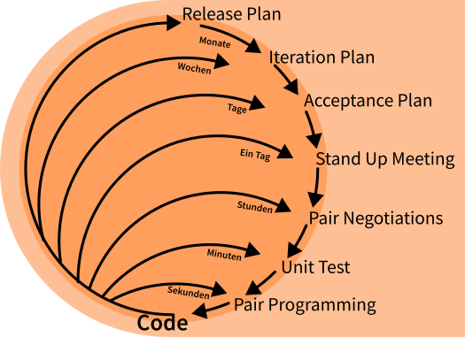

KOM-ITIL
Agile und Lean sind zwei moderne Ansätze im Projektmanagement, die sich darauf konzentrieren, effizientere und effektivere Prozesse zu schaffen. Sie sind besonders in der IT-Branche beliebt, wo Projekte oft komplex und unvorhersehbar sind.
Agile basiert auf dem Agilen Manifest, das vier Hauptprinzipien hat:
Lean fokussiert sich auf die Eliminierung von Verschwendung (Waste), um den Wert für den Kunden zu maximieren. Die sieben Arten von Verschwendung sind:

Abbildung 1: Extreme Programming (XP)
Lean Development bezieht sich auf die Anwendung von Lean-Prinzipien in der Softwareentwicklung.
Lean-Softwareentwicklung – Vorläufer oder Nachfolger der Agile-Bewegung?